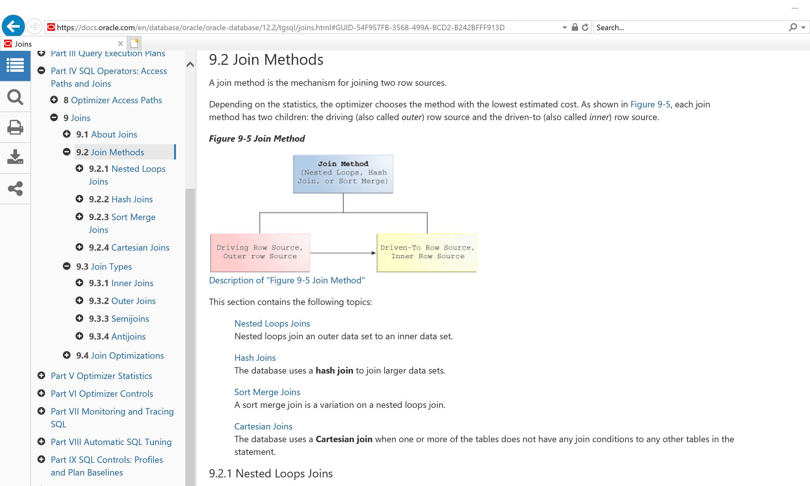
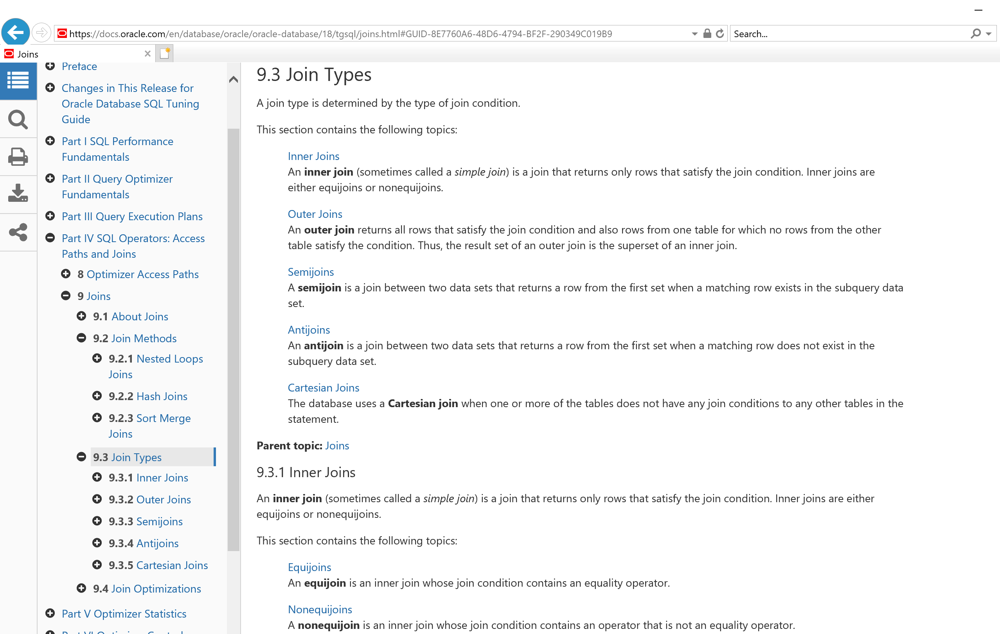
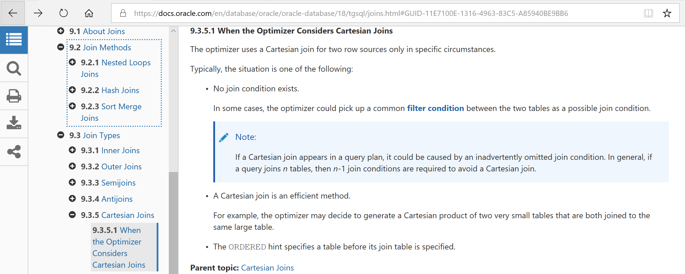
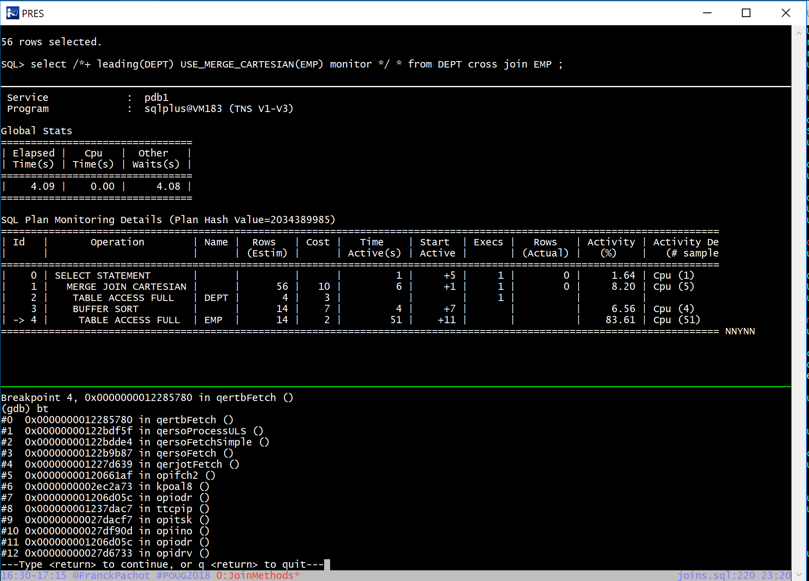

This was first published on https://www.dbi-services.com/blog/merge-join-cartesian-a-join-method-or-a-join-type/ (2018-08-08)
Republishing here for new followers. The content is related to the versions available at the publication date.
.
I’ll present about join methods at POUG and DOAG. I’ll show how the different join methods work in order to better understand them. The idea is to show Nested Loops, Hash Join, Sort Merge Join, Merge Join Cartesian on the same query. I’ll run a simple join between DEPT and EMP with the USE_NL, USE_HASH, USE_MERGE and USE_MERGE_CARTESIAN hints. I’ll show the execution plan, with SQL Monitoring in text mode. And I’ll put some gdb breakpoints on the ‘qer’ (query execution rowsource) functions to run the plan operations step by step. Then I’ll do the same on a different query in order to show in detail the 12c adaptive plans.
But wait, I listed Nested Loops, Hash Join, Sort Merge Join, Merge Join Cartesian… but is Merge Cartesian Join really a join method? I mean, my query is not a cartesian join. I have all join predicates here. But for sure you can also do an inner join by starting with a cartesian join and then filter on the join predicate. As if doing physically what the old join syntax of Oracle is doing logically: by not putting any predicates in the from clause and add the join predicates in the where clause to filter over it. 
If I look at the 12.2 documentation, it is a Join method
For the definition, a Join Method is how the join will be executed. It is not a decision of the SQL developer because SQL is declarative: you declare the result you want, and the optimizer will decide how to do it. And this is why hints are in comments: they are not part of the declarative syntax. Forcing how to do it is not part of SQL.
Just after listing the join methods, the documentation lists the join types which are part of the SQL because it declares the join result you expect. Inner join to get all matching rows. Semi join to get only the first matching row. Anti Join to get all rows which do not match. Outer join to get all matching rows in addition to those which matches. The syntax is INNER JOIN, OUTER JOIN, EXISTS or IN, NOT EXISTS or NOT IN. Join type is not ‘how’ but ‘what’.
Ok, so back to the join method. Let’s force it on my inner join between DEPT and EMP:
SQL> alter session set current_schema=SCOTT statistics_level=all;
Session altered.
SQL> select /*+ leading(DEPT) USE_MERGE_CARTESIAN(EMP) FULL(DEPT) */ * from DEPT join EMP using(deptno);
DEPTNO DNAME LOC EMPNO ENAME JOB MGR HIREDATE SAL COMM
---------- -------------- ------------- ---------- ---------- --------- ---------- --------- ---------- ----------
10 ACCOUNTING NEW YORK 7782 CLARK MANAGER 7839 09-JUN-81 2450
10 ACCOUNTING NEW YORK 7839 KING PRESIDENT 17-NOV-81 5000
10 ACCOUNTING NEW YORK 7934 MILLER CLERK 7782 23-JAN-82 1300
10 RESEARCH DALLAS 7782 CLARK MANAGER 7839 09-JUN-81 2450
10 RESEARCH DALLAS 7839 KING PRESIDENT 17-NOV-81 5000
10 RESEARCH DALLAS 7934 MILLER CLERK 7782 23-JAN-82 1300
10 SALES CHICAGO 7782 CLARK MANAGER 7839 09-JUN-81 2450
10 SALES CHICAGO 7839 KING PRESIDENT 17-NOV-81 5000
10 SALES CHICAGO 7934 MILLER CLERK 7782 23-JAN-82 1300
10 OPERATIONS BOSTON 7782 CLARK MANAGER 7839 09-JUN-81 2450
10 OPERATIONS BOSTON 7839 KING PRESIDENT 17-NOV-81 5000
10 OPERATIONS BOSTON 7934 MILLER CLERK 7782 23-JAN-82 1300
12 rows selected.
SQL> select * from table(dbms_xplan.display_cursor(format=>'allstats last'));
PLAN_TABLE_OUTPUT
------------------------------------------------------------------------------------------------------------------
SQL_ID 1xpfxq6pc30vq, child number 0
-------------------------------------
select /*+ leading(DEPT) USE_MERGE_CARTESIAN(EMP) FULL(DEPT) */ * from
DEPT join EMP using(deptno)
Plan hash value: 2034389985
------------------------------------------------------------------------------------------------------------------
| Id | Operation | Name | Starts | E-Rows | A-Rows | A-Time | Buffers | OMem | 1Mem | Used-Mem |
------------------------------------------------------------------------------------------------------------------
| 0 | SELECT STATEMENT | | 1 | | 12 |00:00:00.01 | 7 | | | |
| 1 | MERGE JOIN CARTESIAN| | 1 | 14 | 12 |00:00:00.01 | 7 | | | |
| 2 | TABLE ACCESS FULL | DEPT | 1 | 4 | 4 |00:00:00.01 | 4 | | | |
| 3 | BUFFER SORT | | 4 | 4 | 12 |00:00:00.01 | 3 | 2048 | 2048 | 2048 (0)|
|* 4 | TABLE ACCESS FULL | EMP | 1 | 4 | 3 |00:00:00.01 | 3 | | | |
------------------------------------------------------------------------------------------------------------------
Predicate Information (identified by operation id):
---------------------------------------------------
4 - filter("DEPT"."DEPTNO"="EMP"."DEPTNO")
Ok, then I declared my result with an inner join query, and I forced the join method with a hint to show that it is possible. But look at the result. 12 rows? Only DEPTNO 10 where the SCOTT schema has employees in 10, 20 and 30? And only 3 employees here, repeated 4 times for each department name? That’s wrong result.
NEVER FORCE A CARTESIAN JOIN WITH USE_MERGE_CARTESIAN!
That’s a very old bug: Bug 17064391 Wrong result with USE_MERGE_CARTESIAN hint finally fixed in 12c (12.2 and backported in 12.1 PSU)
Then how is it fixed?
With the fix, the hint is just ignored and a SORT MERGE JOIN is used here:
SQL> alter session set current_schema=SCOTT statistics_level=all;
Session altered.
SQL> select /*+ leading(DEPT) USE_MERGE_CARTESIAN(EMP) FULL(DEPT) */ * from DEPT join EMP using(deptno);
DEPTNO DNAME LOC EMPNO ENAME JOB MGR HIREDATE SAL COMM
---------- -------------- ------------- ---------- ---------- --------- ---------- --------- ---------- ----------
10 ACCOUNTING NEW YORK 7782 CLARK MANAGER 7839 09-JUN-81 2450
10 ACCOUNTING NEW YORK 7839 KING PRESIDENT 17-NOV-81 5000
10 ACCOUNTING NEW YORK 7934 MILLER CLERK 7782 23-JAN-82 1300
20 RESEARCH DALLAS 7566 JONES MANAGER 7839 02-APR-81 2975
20 RESEARCH DALLAS 7902 FORD ANALYST 7566 03-DEC-81 3000
20 RESEARCH DALLAS 7876 ADAMS CLERK 7788 23-MAY-87 1100
20 RESEARCH DALLAS 7369 SMITH CLERK 7902 17-DEC-80 800
20 RESEARCH DALLAS 7788 SCOTT ANALYST 7566 19-APR-87 3000
30 SALES CHICAGO 7521 WARD SALESMAN 7698 22-FEB-81 1250 500
30 SALES CHICAGO 7844 TURNER SALESMAN 7698 08-SEP-81 1500 0
30 SALES CHICAGO 7499 ALLEN SALESMAN 7698 20-FEB-81 1600 300
30 SALES CHICAGO 7900 JAMES CLERK 7698 03-DEC-81 950
30 SALES CHICAGO 7698 BLAKE MANAGER 7839 01-MAY-81 2850
30 SALES CHICAGO 7654 MARTIN SALESMAN 7698 28-SEP-81 1250 1400
14 rows selected.
SQL> select * from table(dbms_xplan.display_cursor(format=>'allstats last'));
PLAN_TABLE_OUTPUT
--------------------------------------------------------------------------------------------------------------------------
SQL_ID 1xpfxq6pc30vq, child number 0
-------------------------------------
select /*+ leading(DEPT) USE_MERGE_CARTESIAN(EMP) FULL(DEPT) */ * from
DEPT join EMP using(deptno)
Plan hash value: 1407029907
--------------------------------------------------------------------------------------------------------------------------
| Id | Operation | Name | Starts | E-Rows | A-Rows | A-Time | Buffers | Reads | OMem | 1Mem | Used-Mem |
--------------------------------------------------------------------------------------------------------------------------
| 0 | SELECT STATEMENT | | 1 | | 14 |00:00:00.01 | 12 | 12 | | | |
| 1 | MERGE JOIN | | 1 | 14 | 14 |00:00:00.01 | 12 | 12 | | | |
| 2 | SORT JOIN | | 1 | 4 | 4 |00:00:00.01 | 6 | 6 | 2048 | 2048 | 2048 (0)|
| 3 | TABLE ACCESS FULL| DEPT | 1 | 4 | 4 |00:00:00.01 | 6 | 6 | | | |
|* 4 | SORT JOIN | | 4 | 14 | 14 |00:00:00.01 | 6 | 6 | 2048 | 2048 | 2048 (0)|
| 5 | TABLE ACCESS FULL| EMP | 1 | 14 | 14 |00:00:00.01 | 6 | 6 | | | |
--------------------------------------------------------------------------------------------------------------------------
Predicate Information (identified by operation id):
---------------------------------------------------
4 - access("DEPT"."DEPTNO"="EMP"."DEPTNO")
filter("DEPT"."DEPTNO"="EMP"."DEPTNO")
So here the result is good, thanks to the fix, and we clearly see how it is fixed: the USE_MERGE_CARTESIAN hint has been ignored.
And the funny thing is that when you look at the 18c documentation, the Merge Join Cartesian is not a join method anymore but a join type: 
Exactly the same paragraph, but now in join types (the ‘what’) rather than in join methods (the ‘when’).
Actually, in my opinion, it is both. When you explicitly want a cartesian join, that’s a join type described by the CROSS JOIN in the ANSI join syntax, or the lack of related predicates in the old syntax. This is ‘what’. But you may also encounter a MERGE JOIN CARTESIAN for a non-cartesian join just because the optimizer decides it is more efficient. When you have very few rows on both sides, it may be faster to start with a cartesian product on small rowsources. This can be part of star transformation where fact rows are joined back to the cartesian product of filtered dimensions in order to project the dimension attributes. This is ‘how’ it will be executed. We also see it when the optimizer underestimates the cardinalities and is followed by a long nested loop.
So, let’s look at the documentation “When the Optimizer Considers Cartesian Joins”: 
In conclusion, cartesian join is a join type. It can also be used as a join method when the optimizer decides to. But you cannot decide it yourself by hinting since 12c, and trying to do so in previous version is a very bad idea and can returns wrong results.
So, for this one I’ll explicitely run a CROSS JOIN: 
The query is on top. The SQL monitor in the middle, showing that we are currently active on reading rows from EMP. The bottom shows the ‘qer’ functions backtrace: the fetch call is propagated from opifch2 for the SELECT STATEMENT, through the MERGE JOIN CARTESIAN (querjo), the BUFFER SORT (qerso), to the TABLE ACCESS (qertb).
So basically, the goal of this full-demo presentation is to show how to read the execution plan by understanding how it is executed. This qertbFetch on the inner table EMP is executed only on the first row coming from the outer table DEPT. As the rows are returned to a buffer, the further iterations will fetch only from this buffer and will not go further than qersoFetchSimple. The qersoProcessULS (‘process underlying row source’ – see Frits Hoogland annotations) is run only once. This is the big difference with Nested Loop where the inner loop on the underlying rowsource is run for each outer loop iteration: those two loops are nested – thus the name. But the function for the join part is the same for Nested Loop, Sort Merge Join and Merge Join Cartesian: qerjo. Only the underlying operations differenciate the join methods.
Last comment, we don’t see any function which really sort the rows in this buffer (as we will see for the Sort Merge Join method) because there is no sorting despites the name of the BUFFER SORT operation. More info on Jonathan Lewis blog.
{kind=link}